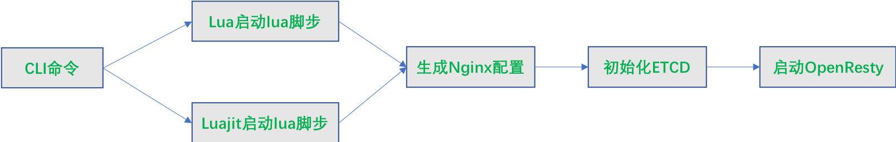

apisix启动命令
APISIX安装
之后，开始启动APISIX，APISIX写一套启动命令工具。
执行apisix help可以查看命令详细信息:
$ apisix help
/usr/local/openresty/luajit/bin/luajit /usr/local/apisix/apisix/cli/apisix.lua help
Usage: apisix [action] <argument>
help: show this message, then exit
init: initialize the local nginx.conf
init_etcd: initialize the data of etcd
start: start the apisix server
stop: stop the apisix server
quit: stop the apisix server gracefully
restart: restart the apisix server
reload: reload the apisix server
version: print the version of apisix
启动源码简析
启动流程

如果OpenResty版本不是1.19，就通过lua启动apisix.lua
源码分析
$ tree -L 2
.
├── apisix
│ ├── admin
│ ├── api_router.lua
│ ├── balancer
│ ├── balancer.lua
│ ├── cli
│ ├── constants.lua
│ ├── consumer.lua
│ ├── control
│ ├── core
│ ├── core.lua
│ ├── debug.lua
│ ├── discovery
│ ├── error_handling.lua
│ ├── http
│ ├── init.lua
│ ├── patch.lua
│ ├── plugin_config.lua
│ ├── plugin.lua
│ ├── plugins
│ ├── router.lua
│ ├── schema_def.lua
│ ├── script.lua
│ ├── ssl
│ ├── ssl.lua
│ ├── stream
│ ├── timers.lua
│ ├── upstream.lua
│ ├── utils
│ └── wasm.lua
├── bin
│ └── apisix
├── CHANGELOG.md
├── CODE_OF_CONDUCT.md
├── CODE_STYLE.md
├── conf
│ ├── apisix.yaml
│ ├── cert
│ ├── config-default.yaml
│ ├── config.yaml
│ ├── debug.yaml
│ ├── mime.types
│ └── nginx.conf
├── CONTRIBUTING.md
├── deps
│ ├── lib
│ └── share
├── LICENSE
├── MAINTAIN.md
├── Makefile
├── NOTICE
├── powered-by.md
├── README.md
└── rockspec
├── apisix-2.12.1-0.rockspec
└── apisix-master-0.rockspec
apisix源码bin/apisix是命令入口，是一个shell脚本，通过lua或luajit启动apisix编写的启动lua脚本，这些lua脚步主要在apisix/cli目录下。
apisix.lua中引用的lua包路径，解析参数，执行相应命令参数的回调函数，启动apisix。命令行中每个参数对应一个回调函数，这些函数在ops.lua中。
...
local action = {
help = help,
version = version,
init = init,
init_etcd = etcd.init,
start = start,
stop = stop,
quit = quit,
restart = restart,
reload = reload,
test = test,
}
function _M.execute(env, arg)
local cmd_action = arg[1]
if not cmd_action then
return help()
end
if not action[cmd_action] then
stderr:write("invalid argument: ", cmd_action, "\n")
return help()
end
action[cmd_action](env, arg[2])
end
...
我看一下start函数
local function start(env, ...)
...
-- 创建日志目录
local cmd_logs = "mkdir -p " .. env.apisix_home .. "/logs"
util.execute_cmd(cmd_logs)
-- 检查是否已经启动
-- 解析命令行参数
local parser = argparse()
-- 解析用户自定义配置参数
-- 初始化
init(env)
-- 初始化etcd
init_etcd(env, args)
-- 执行启动OpenResty命令
util.execute_cmd(env.openresty_args)
end
这个启动函数中最重要的是init(env)初始化函数，这里初始化了apisix启动所有的配置信息，根据配置参数以及模板生成nginx.conf配置。
local function init(env)
-- 判断root path， apisix不推荐在root下启动apisix
-- 检查 ulimit，建议将ulimit设置大一些
-- 解析conf/*.yaml的配置
local yaml_conf, err = file.read_yaml_conf(env.apisix_home)
if not yaml_conf then
util.die("failed to read local yaml config of apisix: ", err, "\n")
end
-- 校验解析yaml是否正确，因为需要根据yaml配置信息，生成nginx.conf，这个配置很重要，因此apisix在这里进行大量的校验
-- 校验成功后，生成nginx.conf配置
local conf_render = template.compile(ngx_tpl)
local ngxconf = conf_render(sys_conf)
local ok, err = util.write_file(env.apisix_home .. "/conf/nginx.conf",
ngxconf)
if not ok then
util.die("failed to update nginx.conf: ", err, "\n")
end
end
apisix的生成nginx.conf的模板
，nginx.conf不能手工修改，应该它
每次启动时会重新生成，apisix也是支持自定义配置的，自定义配置
。
看一下渲染生成的nginx.conf配置，我这个没有设置4层(stream)的配置，apisix也是支持4层转发的。
# Configuration File - Nginx Server Configs
# This is a read-only file, do not try to modify it.
master_process on;
worker_processes auto;
worker_cpu_affinity auto;
# main configuration snippet starts
# main configuration snippet ends
error_log logs/error.log warn;
pid logs/nginx.pid;
worker_rlimit_nofile 20480;
events {
accept_mutex off;
worker_connections 10620;
}
worker_rlimit_core 16G;
worker_shutdown_timeout 240s;
env APISIX_PROFILE;
env PATH; # for searching external plugin runner's binary
http {
# put extra_lua_path in front of the builtin path
# so user can override the source code
lua_package_path "$prefix/deps/share/lua/5.1/?.lua;$prefix/deps/share/lua/5.1/?/init.lua;/usr/local/apisix/?.lua;/usr/local/apisix/?/init.lua;;/usr/local/apisix/?.lua;./?.lua;/usr/local/openresty/luajit/share/luajit-2.1.0-beta3/?.lua;/usr/local/share/lua/5.1/?.lua;/usr/local/share/lua/5.1/?/init.lua;/usr/local/openresty/luajit/share/lua/5.1/?.lua;/usr/local/openresty/luajit/share/lua/5.1/?/init.lua;";
lua_package_cpath "$prefix/deps/lib64/lua/5.1/?.so;$prefix/deps/lib/lua/5.1/?.so;;./?.so;/usr/local/lib/lua/5.1/?.so;/usr/local/openresty/luajit/lib/lua/5.1/?.so;/usr/local/lib/lua/5.1/loadall.so;";
lua_max_pending_timers 16384;
lua_max_running_timers 4096;
lua_shared_dict internal-status 10m;
lua_shared_dict plugin-limit-req 10m;
lua_shared_dict plugin-limit-count 10m;
lua_shared_dict prometheus-metrics 10m;
lua_shared_dict plugin-limit-conn 10m;
lua_shared_dict upstream-healthcheck 10m;
lua_shared_dict worker-events 10m;
lua_shared_dict lrucache-lock 10m;
lua_shared_dict balancer-ewma 10m;
lua_shared_dict balancer-ewma-locks 10m;
lua_shared_dict balancer-ewma-last-touched-at 10m;
lua_shared_dict plugin-limit-count-redis-cluster-slot-lock 1m;
lua_shared_dict tracing_buffer 10m; # plugin: skywalking
lua_shared_dict plugin-api-breaker 10m;
lua_shared_dict etcd-cluster-health-check 10m; # etcd health check
# for openid-connect and authz-keycloak plugin
lua_shared_dict discovery 1m; # cache for discovery metadata documents
# for openid-connect plugin
lua_shared_dict jwks 1m; # cache for JWKs
lua_shared_dict introspection 10m; # cache for JWT verification results
# for authz-keycloak
lua_shared_dict access-tokens 1m; # cache for service account access tokens
# for ext-plugin
lua_shared_dict ext-plugin 1m; # cache for ext-plugin
# for custom shared dict
# for proxy cache
proxy_cache_path /tmp/disk_cache_one levels=1:2 keys_zone=disk_cache_one:50m inactive=1d max_size=1G use_temp_path=off;
lua_shared_dict memory_cache 50m;
# for proxy cache
map $upstream_cache_zone $upstream_cache_zone_info {
disk_cache_one /tmp/disk_cache_one,1:2;
}
lua_ssl_verify_depth 5;
ssl_session_timeout 86400;
underscores_in_headers on;
lua_socket_log_errors off;
resolver 10.2.255.200 ipv6=on;
resolver_timeout 5;
lua_http10_buffering off;
lua_regex_match_limit 100000;
lua_regex_cache_max_entries 8192;
log_format main escape=default '$remote_addr - $remote_user [$time_local] $http_host "$request" $status $body_bytes_sent $request_time "$http_referer" "$http_user_agent" $upstream_addr $upstream_status $upstream_response_time "$upstream_scheme://$upstream_host$upstream_uri"';
uninitialized_variable_warn off;
access_log logs/access.log main buffer=16384 flush=3;
open_file_cache max=1000 inactive=60;
client_max_body_size 0;
keepalive_timeout 60s;
client_header_timeout 60s;
client_body_timeout 60s;
send_timeout 10s;
variables_hash_max_size 2048;
server_tokens off;
include mime.types;
charset utf-8;
# error_page
error_page 500 @50x.html;
real_ip_header X-Real-IP;
real_ip_recursive off;
set_real_ip_from 127.0.0.1;
set_real_ip_from unix:;
# http configuration snippet starts
# http configuration snippet ends
upstream apisix_backend {
server 0.0.0.1;
keepalive 320;
keepalive_requests 1000;
keepalive_timeout 60s;
# we put the static configuration above so that we can override it in the Lua code
balancer_by_lua_block {
apisix.http_balancer_phase()
}
}
apisix_delay_client_max_body_check on;
apisix_mirror_on_demand on;
init_by_lua_block {
require "resty.core"
apisix = require("apisix")
local dns_resolver = { "10.2.255.200", }
local args = {
dns_resolver = dns_resolver,
}
apisix.http_init(args)
}
init_worker_by_lua_block {
apisix.http_init_worker()
}
exit_worker_by_lua_block {
apisix.http_exit_worker()
}
server {
listen 127.0.0.1:9090;
access_log off;
location / {
content_by_lua_block {
apisix.http_control()
}
}
location @50x.html {
set $from_error_page 'true';
content_by_lua_block {
require("apisix.error_handling").handle_500()
}
}
}
server {
listen 127.0.0.1:9091;
access_log off;
location / {
content_by_lua_block {
local prometheus = require("apisix.plugins.prometheus")
prometheus.export_metrics()
}
}
location = /apisix/nginx_status {
allow 127.0.0.0/24;
deny all;
stub_status;
}
}
server {
listen 0.0.0.0:9080 default_server reuseport;
listen [::]:9080 default_server reuseport;
listen 0.0.0.0:9443 ssl default_server http2 reuseport;
listen [::]:9443 ssl default_server http2 reuseport;
server_name _;
ssl_certificate cert/ssl_PLACE_HOLDER.crt;
ssl_certificate_key cert/ssl_PLACE_HOLDER.key;
ssl_session_cache shared:SSL:20m;
ssl_session_timeout 10m;
ssl_protocols TLSv1.2 TLSv1.3;
ssl_ciphers ECDHE-ECDSA-AES128-GCM-SHA256:ECDHE-RSA-AES128-GCM-SHA256:ECDHE-ECDSA-AES256-GCM-SHA384:ECDHE-RSA-AES256-GCM-SHA384:ECDHE-ECDSA-CHACHA20-POLY1305:ECDHE-RSA-CHACHA20-POLY1305:DHE-RSA-AES128-GCM-SHA256:DHE-RSA-AES256-GCM-SHA384;
ssl_prefer_server_ciphers on;
ssl_session_tickets off;
# http server configuration snippet starts
# http server configuration snippet ends
location = /apisix/nginx_status {
allow 127.0.0.0/24;
deny all;
access_log off;
stub_status;
}
location /apisix/admin {
set $upstream_scheme 'http';
set $upstream_host $http_host;
set $upstream_uri '';
allow 127.0.0.0/24;
deny all;
content_by_lua_block {
apisix.http_admin()
}
}
ssl_certificate_by_lua_block {
apisix.http_ssl_phase()
}
proxy_ssl_name $upstream_host;
proxy_ssl_server_name on;
location / {
set $upstream_mirror_host '';
set $upstream_upgrade '';
set $upstream_connection '';
set $upstream_scheme 'http';
set $upstream_host $http_host;
set $upstream_uri '';
set $ctx_ref '';
set $from_error_page '';
# http server location configuration snippet starts
# http server location configuration snippet ends
access_by_lua_block {
apisix.http_access_phase()
}
proxy_http_version 1.1;
proxy_set_header Host $upstream_host;
proxy_set_header Upgrade $upstream_upgrade;
proxy_set_header Connection $upstream_connection;
proxy_set_header X-Real-IP $remote_addr;
proxy_pass_header Date;
### the following x-forwarded-* headers is to send to upstream server
set $var_x_forwarded_for $remote_addr;
set $var_x_forwarded_proto $scheme;
set $var_x_forwarded_host $host;
set $var_x_forwarded_port $server_port;
if ($http_x_forwarded_for != "") {
set $var_x_forwarded_for "${http_x_forwarded_for}, ${realip_remote_addr}";
}
if ($http_x_forwarded_host != "") {
set $var_x_forwarded_host $http_x_forwarded_host;
}
if ($http_x_forwarded_port != "") {
set $var_x_forwarded_port $http_x_forwarded_port;
}
proxy_set_header X-Forwarded-For $var_x_forwarded_for;
proxy_set_header X-Forwarded-Proto $var_x_forwarded_proto;
proxy_set_header X-Forwarded-Host $var_x_forwarded_host;
proxy_set_header X-Forwarded-Port $var_x_forwarded_port;
### the following configuration is to cache response content from upstream server
set $upstream_cache_zone off;
set $upstream_cache_key '';
set $upstream_cache_bypass '';
set $upstream_no_cache '';
proxy_cache $upstream_cache_zone;
proxy_cache_valid any 10s;
proxy_cache_min_uses 1;
proxy_cache_methods GET HEAD POST;
proxy_cache_lock_timeout 5s;
proxy_cache_use_stale off;
proxy_cache_key $upstream_cache_key;
proxy_no_cache $upstream_no_cache;
proxy_cache_bypass $upstream_cache_bypass;
proxy_pass $upstream_scheme://apisix_backend$upstream_uri;
mirror /proxy_mirror;
header_filter_by_lua_block {
apisix.http_header_filter_phase()
}
body_filter_by_lua_block {
apisix.http_body_filter_phase()
}
log_by_lua_block {
apisix.http_log_phase()
}
}
location @grpc_pass {
access_by_lua_block {
apisix.grpc_access_phase()
}
grpc_set_header Content-Type application/grpc;
grpc_socket_keepalive on;
grpc_pass $upstream_scheme://apisix_backend;
header_filter_by_lua_block {
apisix.http_header_filter_phase()
}
body_filter_by_lua_block {
apisix.http_body_filter_phase()
}
log_by_lua_block {
apisix.http_log_phase()
}
}
location = /proxy_mirror {
internal;
proxy_http_version 1.1;
proxy_set_header Host $upstream_host;
proxy_pass $upstream_mirror_host$request_uri;
}
location @50x.html {
set $from_error_page 'true';
content_by_lua_block {
require("apisix.error_handling").handle_500()
}
header_filter_by_lua_block {
apisix.http_header_filter_phase()
}
log_by_lua_block {
apisix.http_log_phase()
}
}
}
# http end configuration snippet starts
# http end configuration snippet ends
}
-
根据模板生成的
nginx.conf监听的9080和9443端口，IP则是0.0.0.0和[::]这是特殊IP，允许所有IP的请求进入 -
/apisix/admin的location主要是处理控制面的接口。 -
在OpenResty的
init阶段嵌入apisix.http_init(args)init_by_lua_block { require "resty.core" apisix = require("apisix") local dns_resolver = { "10.2.255.200", } local args = { dns_resolver = dns_resolver, } apisix.http_init(args) } -
在
init_worker阶段嵌入apisix.http_init_worker() -
在
exit_worker阶段嵌入apisix.http_exit_worker() -
在
ssl_handshake阶段嵌入apisix.http_ssl_phase() -
在
access阶段嵌入apisix.http_access_phase()，apisix没有设置rewrite阶段，匹配路由，挑选server -
在
content阶段，设置上游server，apisix主要通过apisix.http_balancer_phase()实现的。upstream apisix_backend { server 0.0.0.1; keepalive 320; keepalive_requests 1000; keepalive_timeout 60s; # we put the static configuration above so that we can override it in the Lua code balancer_by_lua_block { apisix.http_balancer_phase() } } -
在
header_filter阶段嵌入apisix.http_header_filter_phase() -
在
body_filter阶段嵌入apisix.http_body_filter_phase() -
在
log阶段嵌入apisix.http_log_phase()
到这里apisix启动流程介绍完了，启动过程主要是初始化数据以及etcd，生成nginx.conf配置，apisix大部分的代码逻辑都嵌入到OpenResty处理请求的各个阶段，
后面再分析一个请求在apisix的处理过程、etcd数据同步过程和apisix的控制面。